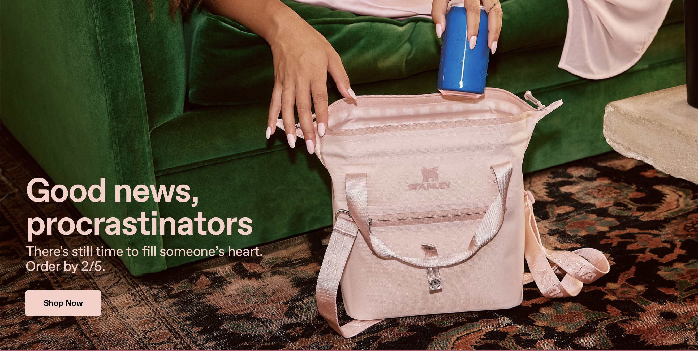

While scrolling through TikTok or other social media in order to purchase a specific item we subconsciously only pay attention to one thing- aesthetics. The item itself might not be unique, moreover, overpriced. However, if it looks good- it will make it to your cart. And that is how Stanleys became so well-known. Through their website and social media accounts you can vividly trace the brand identity. Minimalistic. Modern. Relevant. Just like people like it. And the concept lingers through all of their content, which attracts the right audience and perfect customers.
It goes into the second point why everyone is genuinely so obsessed with Stanley cups- reasonably built targeted ads. During the time when cups were so favored, the pilates girl aesthetic was also admired. Pink matching sets, skincare routines, working out and being aware of your health and lifestyle. That’s when staying hydrated also hyped up. Suddenly, every girl was obsessed with always drinking enough water and Stanleys fit perfectly into their aesthetics. They were portable, capacious and good-looking, just what these individuals were looking for. There were so many fans of this particular lifestyle and, consequently, fans of Stanleys. Therefore, it created the vision that ‘everybody’ had the caps when, in fact, only those who sought visual pleasure did. But they were actively promoted in social media, which made others believe cups were actually used by all of the communities.
One more thing why people feel drawn to purchase Stanley is the variety of versions and colors the brand provides. While other thermos companies offer a limited range of sizes or colors, Stanley has dozens of them. Therefore, everyone can choose the one that fits their lifestyle, personality and heart. Doing even deeper, the company always developed new ideas to promote their cups, such as creating special form of ice or extra holders for keys and lipglosses to fasten on the handle of the cup. Very smart move.
The bottom line is, Stanley’s marketing team did a great job in promoting their product to the masses through visual storytelling, keeping up with and adapting to new trends and enriching the functionality of the cups.